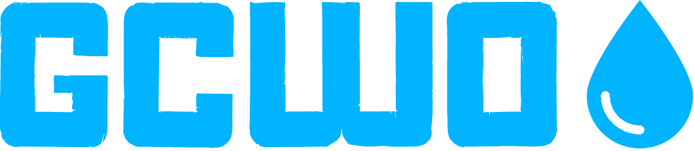

Global Clean Water Organization
'Global Clean Water Organization'의 약자로, 물의 위생상태 개선을 위해 힘쓰는 비정부 기구이다.

이름: 보노보노
동물: 해달
의미: 최근 해달이 수질 오염으로 멸종위기에 처해있다.
그 상황이 물의 위생 상태를 개선하자는 우리의 생각과 비슷해서 우리의 마스코트로 정했다.
전세계 모든 사람들이 깨끗한 물을 마실 수 있도록 노력하는 것.
실제, 안전하게 관리된 식수를 공급 받지 못하는 사람들이 약 22억명이나 되고
비위생적인 물을 사용하는 사람들이 약 44억명이나 된다.
(그림 1) 세계 물 빈곤 지수(WPI, Water Poverty Index)
◯ 물의 빈곤 : 물부족만이 아닌 수질환경, 위생문제 등의 복합작용의 결과물
■ 물 빈곤 지수 (WPI, Water Poverty Index)는 얼마나 쉽게 물을 공급받을 수 있는지,
깨끗한 물을 구할 수 있도록 해주는 소득 수준,
환경 문제 등의 여러 요인을 고려한 수치로
WPI 가 0 에 가까울수록 (0~100 의 수치로 나눔 ) 수자원 여건이 좋지 않음을 나타내는 지표이다.
■ 물 빈곤지수는 수자원 총량에 대해서만 나타내는 것이 아니라 물 부족에 원인을 주는 위 5가지
요인 모두를 고려한 지수로 물 빈곤 지수를 결정하는 5 가지 요인은:
■ 물은 사람이 생명을 유지하는 데 꼭 필요한 것으로 물이 오염되면 사람의 목숨도 위험해진다.
특히 위생시설이 열악한 지역에서는 오염된 물로 인한 수인성 질병이 빠르게 퍼지기도 한다.
주로 물이나 음식물에 들어 있는 세균에 의해 전염되는 수인성
전염병은 주로 복통과 설사, 구토 증세를 보이며 사망하기까지 한다.
■ 물에 관한 위생문제는 위생시설 설치와 노상배변과 밀접한 관련이 있다.
화장실이 보급되어 보다 깨끗한 식수와 생활용수를 얻을 수 있다면
5세 이하 영유아 사망률과 전염병이 지금보다 75% 감소할 것으로
기대할 수 있다는 것은 이를 반증하는 것이다.
■ 화장실이 보급되지 않은 지역에서는 이른바 Flying Toilet 즉,
비닐봉지에 배변을 하여 무분별하게 하천으로 투척하여,
지하수를 오염시키는 일들이 빈번하게 일어나고 있다.
노상방뇨로 인해 강물과 지하수는 오염될 수 밖에 없으며,
이렇게 오염된 강물과 지하수를 또 다시 생활용수와 식수로 사용하기 때문에
결과적으로 사람들은 오염된 물을 마실 수밖에 없다.
(그림 2). 수인성 질병의 원인이 되는 더러운 물과 위생

(그림 3) 안전하게 관리되는 위생시설을 이용하는 지역
(그림 4). 국가 소득에 따른 사망원인의 차이
■ (그림 4)는 고소득국가와 저소득국가의 사망원인을 분석한 그림이다.
(그림 3)에 제시된 전 세계 지역의 사망원인 통계를 살펴볼 경우, 고소득국가에서는
심장질환·뇌졸중 등이 사망 원인으로 많지만, 저소득국가에서는 감염성 질환, 설사 등이
가장 높은 비율을 차지하는 것을 확인할 수 있다.
■ 저소득국가에서 설사, 감염성 질환과 같은 수인성 전염병 형태가
주요 사망원인이 되는 이유는 오염된 물로 인한 반복되는 악순환 때문이다.
■ 저소득 국가의 경우, 물 위생시설이 열악하고 노상분뇨로 인한
위생처리시설이 부재함에 따라 쉽게 오염된 물에 노출되어 장티푸스,
콜레라 등의 수인성 질병에 걸리게 되고, 이렇게 질병에 걸린 사람들의
분변을 통해 병원성 미생물이 몸 밖으로 이동하여 주변 사람들에게 전파된 후,
또 다시 주변의 물을 오염시키는 악순환이 반복되고 있는 것이다.
사람들에게 물의 위생 상태를 개선시키는 방법을 알려준다.